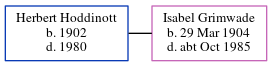

Gladys Millicent Vincent (née Grimwade) 1906 - c1997
[ Home ] | [ Calendar ] | [ Surnames Index ] | [ Errors ] | [ Family History ]The younger of 2 children of Mark Grimwade (a land company foreman) and Frances Payton, Gladys Grimwade, the third cousin twice-removed on the mother's side of Nigel Horne, was born in Minster, Sheppey, Kent, England on 23 Jan 19061,2,3,4 and baptised there at Ss Mary & Sexburga on 4 Mar 1906. She married William Vincent (a shop assistant) in Sheppey, Kent, England around Nov 19355.
During her life, she was living at Louis Villi, Minster in Sheppey on 2 Apr 19116; and at No 30 Council Houses, Chichester, Sussex, England on 29 Sept 19391 - less than a mile from her third cousin on her mother's side Daisy Dane who was living at 6 The Hornet in Chichester.
She died c. Feb 1997 in Chichester3.
Parents
- Mark was born in 1879
- Frances Louisa was born on 8 Jan 1882
Citations
- 1939 Register - Findmypast (was the wife of the head of the household)
- England & Wales births 1837-2006 - Findmypast
- England & Wales deaths 1837-2007 - Findmypast
- Kent Baptisms - Findmypast
- England & Wales Marriages 1837-2005 - Findmypast
- 1911 Census for England & Wales - Findmypast (was age 5 and the daughter of the head of the household)
Media
Kent Baptisms - GBPRS/B/82353442/1
1911 Census for England & Wales - GBC/1911/RG14/04451/0109/4
England & Wales deaths 1837-2007 - BMD/D/1997/1/82267556
England & Wales marriages 1837-2005 - BMD/M/1935/4/AZ/000515/052
England & Wales births 1837-2006 - BMD/B/1906/1/AZ/000249/220
Kent Baptisms - PRS/KENT/BAP/0468770
1939 Register - TNA/R39/2617/2617D/015/08
Family Tree
Map
Generated by ged2site. Last updated on Jul 3, 2024